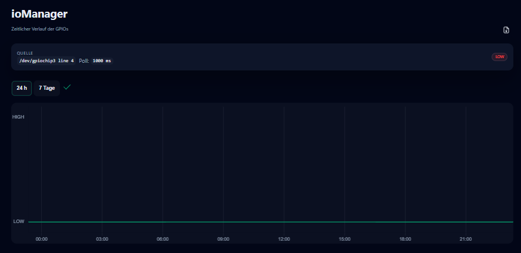

Signal und Verlauf gemeinsam prüfen
Ein Status-Badge zeigt den aktuellen Pegel. Zeitfilter von einer Stunde bis zu mehreren Tagen machen sichtbar, wann ein Kontakt umgeschaltet hat und ob das Verhalten zur erwarteten Anlagenfunktion passt.
Lokale Übergabe an evcc
Wenn ioManager und evcc auf demselben eHive One laufen, kann der aktuelle Eingangszustand über einen lokalen HTTP-Endpunkt als HEMS-Signal verwendet werden. Leistungsgrenzen und Logik müssen zur konkreten Anlage passen.
Elektrische Arbeiten bleiben Facharbeit
Die App zeigt und übergibt Signale; sie ersetzt keine Prüfung von Verdrahtung, Kontaktlogik oder regulatorischer Umsetzung. Arbeiten an Elektroinstallation und Steuerkontakten gehören in die Hände einer Elektrofachkraft.